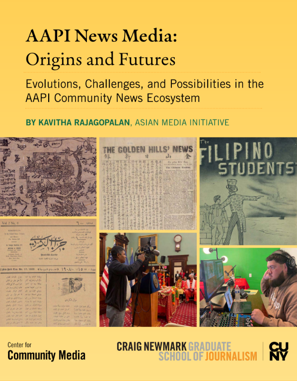

|
|
|
|
|

The AAPI Media Map is an interactive feature which shows more hundreds of AAPI media outlets around the country. Designed by CCM Manager of Operations and Information Design Jennifer Cheng.
|
|
Welcome to the Center for Community Media’s new Spotlight on Community Media newsletter! Once a month, you will see a Q+A, interview, case study, or other feature on a community media publisher or issue relevant to community-serving media outlets and those who support them. Our goal for this newsletter is to tell stories about the people who make up the community media ecosystem, how they work, their successes and lessons learned. Do you have a publisher or issue you would like to see featured? Email Mythili Sampathkumar at mythili.sampathkumar@journalism.cuny.edu.
|
|
Kavitha Rajagopalan had heard the stories. A Chinese-language journalist who had four of her reported pieces removed from the social media platform WeChat with no explanation. A Palestinian journalist writing about a member of her community, only to be doxxed by an organization that documents online speech it deems as anti-American or anti-Israel. The chilling effect of independent journalist Mario Guevara’s arrest and deportation on Atlanta reporters who are non-citizens – regardless of their country of origin.
As the head of CCM’s programming in service of Asian American and Pacific Islander media, Rajagopalan knew she had to do something. "A lot of press freedom work, which is absolutely important and necessary, does not serve and work directly with immigrant journalists working in community-based newsrooms,” she recalls realizing earlier this year. “I thought it was important to begin documenting these experiences and to start creating support spaces for in-language and community based news sources for Asian American immigrants”
And so the AAPI Safety Cohort began to take shape. Through conversations, research, and with the input of Newmark J-School’s Journalism Protection Initiative (JPI), Rajagopalan put together a program that would tackle the dual threats facing many journalists in the community: repressive home country governments and new threats here at home. By March 2025, Rajagopalan had done a year of engagement with in-language journalists and documented their safety concerns for an internal report on their unique situation when it came to press freedom. Prioritizing those who had faced media oppression in their home countries and those working in communities that had already been under surveillance through transnational repression as well as through U.S. national security protocols, 14 people were chosen for the cohort. They represented community newsrooms working in seven states and
nine languages, including Arabic, Bahasa Indonesia, Bangla, Chinese, Hindi, Kannada, Marathi, and Telugu.
The members of the cohort, who we will not name in this newsletter out of concern for their safety, are immigrants themselves, operate in-language, and come from countries that have some of the harshest censorship laws and routinely restrict press freedom. Many used to be reporters in their countries of origin, where they experienced surveillance and repression, and still have families living there, who could face retaliation for their reporting.
Even though most press freedom and journalist safety work still focus on threats from abroad and exiled journalists working in mainstream media, today’s reporting climate in the U.S. has changed so dramatically that Rajagopalan knew to also develop a cohort that would equip these journalists with strategies for addressing new risks, from Immigration and Customs Enforcement (ICE) crackdowns to increased surveillance and digital security threats. As one participant noted: “The call is coming from inside the house.”
--
The program began with a virtual risk-assessment workshop with legal and safety experts from CUNY’s Creating Law Enforcement Accountability & Responsibility (CLEAR) project, the Committee to Protect Journalists, the Cornell Law School First Amendment Clinic, the International Women’s Media Foundation, and others. The participants ranked their safety risks and then re-ranked them after initial consultations, using an established rubric developed by security experts.
The group then met monthly, and organized and communicated amongst themselves on Signal. They also attended a Know Your Rights workshop with CUNY CLEAR, and participated in tailored, individual consultations with a press freedom or journalism safety expert, and other ad hoc training sessions based on current events. The group also expanded their network with transnational surveillance experts.
|
|
 The AAPI News Media: Origins and Futures, a report from CCM's Kavitha Rajagopalan
|
|
The monthly virtual gatherings also became a place to share experiences and work through hardship. Newsroom leaders shared how they were adapting in the absence of tailored formal guidance from their publication owners or other institutional support. Reporters described shifting to desktop reporting instead of fieldwork, withholding bylines, avoiding protests and public events, and sending volunteers with contact information for immigration attorneys when they did have to report in person. Some stopped translating or sharing stories on certain platforms out of fear of surveillance. Others faced targeted harassment online or shadowbanning for coverage of Palestine or India. A cohort member from another Atlanta-based outlet covering immigrant stories in the region described their hesitation as a Muslim-American journalist in covering pro-Palestine protests and needing to reach
out to journalism support organizations for specific advice on how to do so safely.
Participants were given a small stipend to experiment with one safety tool or protocol that was taught or discussed during the workshop. Some of the fixes were low-tech: Prothom Alo in New York used funds to pay members of the Bangladeshi community who accompany reporters in the field. They were there to watch for ICE officers and report back if any journalists or others from the community were detained. The volunteers were given burner phones pre-loaded with phone numbers of the publisher and a Bangla-speaking immigration lawyer. PiYaoBa / Justice Patch in San Francisco and World Journal bought voice recorders so their staff would not have to use their cell phones during interviews, as well as external storage drives and extra cloud storage to mitigate security risks or prevent the loss of vital records.
Others tested digital tools. 285 South in Atlanta subscribed to DeleteMe, opened P.O. boxes, and set up Google Voice numbers to protect staff identities. Al-Bustan News in Philadelphia purchased Outlook and provided professional email addresses for their freelancers to monitor correspondence and potential security risks. Their freelancers were also trained on digital security.
--
Of course, none of these measures are long-term fixes to mounting safety challenges. Several expressed hope that the broader journalism support world would begin to offer greater access to safety resources for community media outlets who don’t have the resources to employ staff attorneys or legal counsel on retainer, such as through free hotlines or other pro bono support from attorneys who know both First Amendment and Immigration law. But what became clear, as the cohort wrapped up its work in September, was that this experience mattered as much for its members emotionally and psychologically, as it did for their organizations tactically. AAPI immigrant community-serving media are consistently “facing burnout, lack of resources, and isolation,” said Rajagopalan, explaining that many of the group’s members told her that the personal connections and relationships of
trust that they developed with others facing similar threats and challenges bolstered their spirit and their resolve to continue doing the vital work of informing their communities. The group officially ended in September, but the Signal chat is still active and there have been conversations about how cohort members have approached reporting on protests and ICE. Members have also shared their published reporting, and have set up further cybersecurity training. “I belong now to a wonderful group,” one participant noted in a closing session, “I feel I have brothers and sisters in this.”
|
Share with Us
Community media journalists and leaders: please send your personal and professional news, job postings, opportunities, new reporting you'd like amplified, and any requests to share our content to our newsletter editor, Mythili Sampathkumar. |
|
|
|